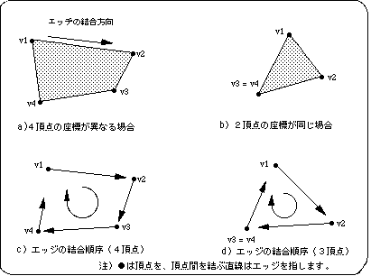

Return to previous page | Return to menu | Go to next page
SGL supports only polygons with 4 vertices. For this reason, polygons with 3 or 5 vertices cannot be represented. However, by setting two vertices of the four vertices to the same coordinate, a polygon with three vertices can be drawn.
Edges are always connected clockwise, regardless of vertex number.

Sega Saturn draws polygons as filled areas on the screen. The procedure for drawing a polygon is as follows.
Next, referring to the actual drawing routine, we will explain the related functions and function parameters.